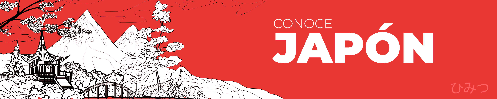

Conoce todo sobre la cultura japonesa
Conoce los famosos 'TORI'
Conoce como es una estructura del 'Tori'
Tori
Conce la estructura
Templo
Conce la estructura
¿Sabes sobre las casas japonesas?
Casa
Conce una casa japonesa
¿Quién es ese pokemon?